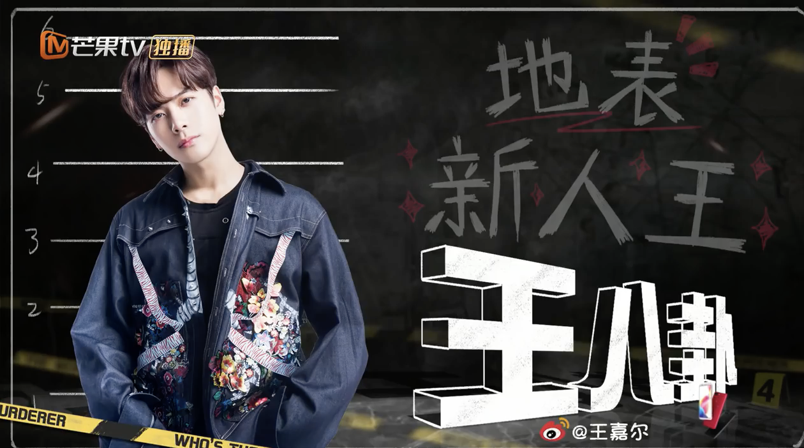

No Zuo No Die
介紹
No Zuo No Die簡稱NZND，是第一季第三案中出現的團體，之後固定每一季一定會出現，但每一次出現就發生謀殺案，所以每一季成員都會有變動。節目組也很用心的幫忙做歌，第一季他們一起唱的歌名叫「如果我開挖掘機你還會愛我嗎」，其他就是個人的獨唱 。
固定成員
| 人名 | 照片 | 主題曲 |
| 撒微笑 (擁有謎之微笑 |
戴墨鏡的漢子 OPPO R11S |
|
| 何美男 (四千年一遇 |
我可以抱你嗎 Shopping的回憶 |
|
| 白Rap (人氣爆表 |
一人背鍋醉 套路 |
成員
| 人名 | 照片 |
| 大主唱 | |
| 陳舞蹈 | |
| 王八卦 |  |